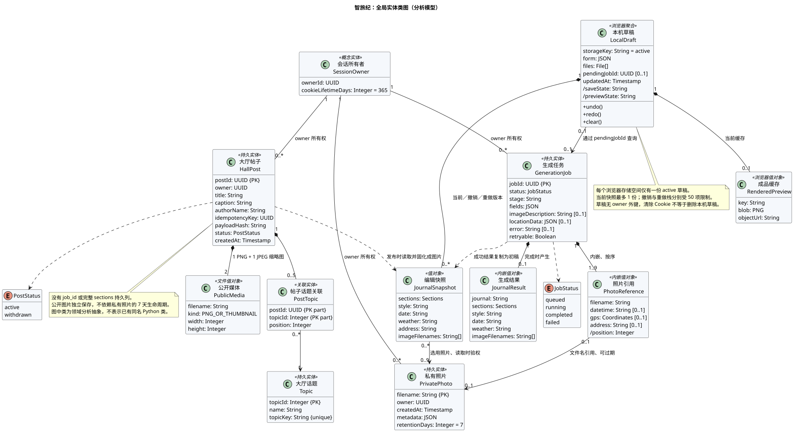
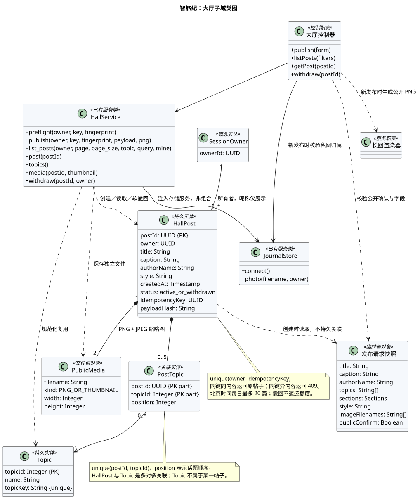

全局实体类图
实体、值对象、所有权、组合关系及关联多重性。

查看完整 PlantUML 代码
@startuml
!pragma layout smetana
skinparam defaultFontName "PingFang SC"
skinparam shadowing false
skinparam classAttributeIconSize 0
skinparam classBackgroundColor #F5F8FC
title 智旅纪：全局实体类图（分析模型）
hide empty methods
class "会话所有者\nSessionOwner" as SessionOwner <<概念实体>> {
ownerId: UUID
cookieLifetimeDays: Integer = 365
}
class "私有照片\nPrivatePhoto" as PrivatePhoto <<持久实体>> {
filename: String {PK}
owner: UUID
createdAt: Timestamp
metadata: JSON
retentionDays: Integer = 7
}
class "生成任务\nGenerationJob" as GenerationJob <<持久实体>> {
jobId: UUID {PK}
status: JobStatus
stage: String
fields: JSON
imageDescription: String [0..1]
locationData: JSON [0..1]
error: String [0..1]
retryable: Boolean
}
class "照片引用\nPhotoReference" as PhotoReference <<内嵌值对象>> {
filename: String
datetime: String [0..1]
gps: Coordinates [0..1]
address: String [0..1]
/position: Integer
}
class "生成结果\nJournalResult" as JournalResult <<内嵌值对象>> {
journal: String
sections: Sections
style: String
date: String
weather: String
imageFilenames: String[]
}
class "本机草稿\nLocalDraft" as LocalDraft <<浏览器聚合>> {
storageKey: String = active
form: JSON
files: File[]
pendingJobId: UUID [0..1]
updatedAt: Timestamp
/saveState: String
/previewState: String
+undo()
+redo()
+clear()
}
class "编辑快照\nJournalSnapshot" as JournalSnapshot <<值对象>> {
sections: Sections
style: String
date: String
weather: String
address: String
imageFilenames: String[]
}
class "成品缓存\nRenderedPreview" as RenderedPreview <<浏览器值对象>> {
key: String
blob: PNG
objectUrl: String
}
class "大厅帖子\nHallPost" as HallPost <<持久实体>> {
postId: UUID {PK}
owner: UUID
title: String
caption: String
authorName: String
idempotencyKey: UUID
payloadHash: String
status: PostStatus
createdAt: Timestamp
}
class "公开媒体\nPublicMedia" as PublicMedia <<文件值对象>> {
filename: String
kind: PNG_OR_THUMBNAIL
width: Integer
height: Integer
}
class "大厅话题\nTopic" as Topic <<持久实体>> {
topicId: Integer {PK}
name: String
topicKey: String {unique}
}
class "帖子话题关联\nPostTopic" as PostTopic <<关联实体>> {
postId: UUID {PK part}
topicId: Integer {PK part}
position: Integer
}
enum JobStatus {
queued
running
completed
failed
}
enum PostStatus {
active
withdrawn
}
SessionOwner "1" -- "0..*" PrivatePhoto : owner 所有权
SessionOwner "1" -- "0..*" GenerationJob : owner 所有权
SessionOwner "1" -- "0..*" HallPost : owner 所有权
GenerationJob "1" *-- "1..9" PhotoReference : 内嵌、按序
PhotoReference "0..1" --> "0..1" PrivatePhoto : 文件名引用、可过期
GenerationJob "1" *-- "0..1" JournalResult : 完成时产生
GenerationJob ..> JobStatus
GenerationJob ..> JournalSnapshot : 成功结果复制为初稿
LocalDraft "1" *-- "0..*" JournalSnapshot : 当前／撤销／重做版本
LocalDraft "1" *-- "0..1" RenderedPreview : 当前缓存
LocalDraft "0..1" --> "0..1" GenerationJob : 通过 pendingJobId 查询
JournalSnapshot "0..*" --> "0..9" PrivatePhoto : 选用照片、读取时验权
HallPost "1" *-- "2" PublicMedia : 1 PNG + 1 JPEG 缩略图
HallPost "1" *-- "0..5" PostTopic
PostTopic "0..*" --> "1" Topic
HallPost ..> PostStatus
HallPost ..> JournalSnapshot : 发布时读取并固化成图片
note bottom of LocalDraft
每个浏览器存储空间仅有一份 active 草稿。
当前快照最多 1 份；撤销与重做栈分别受 50 项限制。
草稿无 owner 外键，清除 Cookie 不等于删除本机草稿。
end note
note bottom of HallPost
没有 job_id 或完整 sections 持久列。
公开图片独立保存，不依赖私有照片的 7 天生命周期。
图中类为领域分析抽象，不表示已有同名 Python 类。
end note
@enduml
大厅子域类图
独立公开媒体、共享话题、幂等与软撤回。

查看完整 PlantUML 代码
@startuml
!pragma layout smetana
skinparam defaultFontName "PingFang SC"
skinparam shadowing false
skinparam classAttributeIconSize 0
skinparam classBackgroundColor #F5F8FC
title 智旅纪：大厅子域类图
class SessionOwner <<概念实体>> {
ownerId: UUID
}
class HallPost <<持久实体>> {
postId: UUID {PK}
owner: UUID
title: String
caption: String
authorName: String
style: String
createdAt: Timestamp
status: active_or_withdrawn
idempotencyKey: UUID
payloadHash: String
}
class PublicMedia <<文件值对象>> {
filename: String
kind: PNG_OR_THUMBNAIL
width: Integer
height: Integer
}
class Topic <<持久实体>> {
topicId: Integer {PK}
name: String
topicKey: String {unique}
}
class PostTopic <<关联实体>> {
postId: UUID {PK part}
topicId: Integer {PK part}
position: Integer
}
class "发布请求快照" as PublicationPayload <<临时值对象>> {
title: String
caption: String
authorName: String
topics: String[]
sections: Sections
style: String
imageFilenames: String[]
publicConfirm: Boolean
}
class "大厅控制器" as Controller <<控制职责>> {
+publish(form)
+listPosts(filters)
+getPost(postId)
+withdraw(postId)
}
class HallService <<已有服务类>> {
+preflight(owner, key, fingerprint)
+publish(owner, key, fingerprint, payload, png)
+list_posts(owner, page, page_size, topic, query, mine)
+post(postId)
+topics()
+media(postId, thumbnail)
+withdraw(postId, owner)
}
class JournalStore <<已有服务类>> {
+connect()
+photo(filename, owner)
}
class "长图渲染器" as Renderer <<服务职责>>
SessionOwner "1" -- "0..*" HallPost : 所有者，昵称仅展示
HallPost "1" *-- "2" PublicMedia : PNG + JPEG 缩略图
HallPost "1" *-- "0..5" PostTopic
PostTopic "0..*" --> "1" Topic
Controller ..> PublicationPayload : 校验公开确认与字段
Controller --> HallService
Controller --> JournalStore : 新发布时校验私图归属
Controller ..> Renderer : 新发布时生成公开 PNG
HallService --> JournalStore : 注入存储服务，非组合
HallService ..> HallPost : 创建／读取／软撤回
HallService ..> Topic : 规范化复用
HallService ..> PublicMedia : 保存独立文件
HallPost ..> PublicationPayload : 创建时读取，不持久关联
note bottom of HallPost
unique(owner, idempotencyKey)
同键同内容返回原帖子；同键异内容返回 409。
北京时间每日最多 20 篇；撤回不返还额度。
end note
note bottom of PostTopic
unique(postId, topicId)，position 表示话题顺序。
HallPost 与 Topic 是多对多关联；Topic 不属于某一帖子。
end note
@enduml